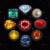
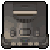
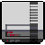
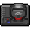
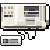
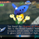
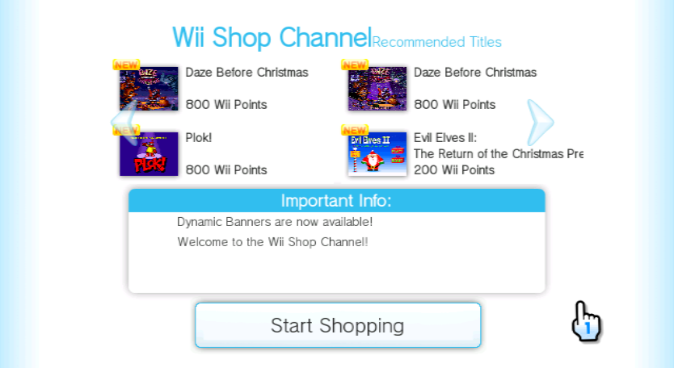
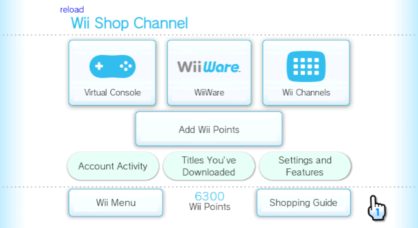
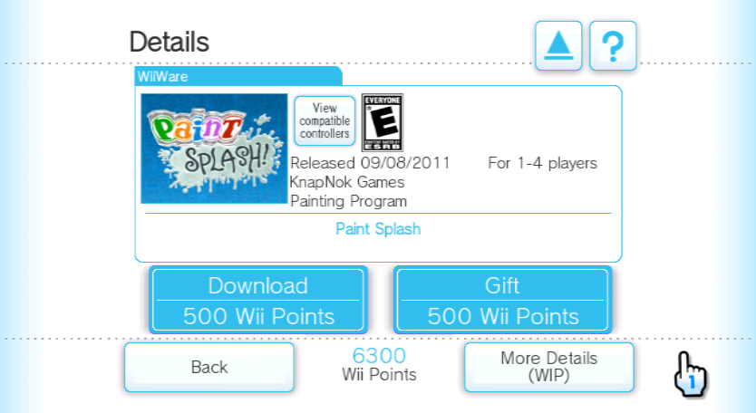

bgm plr..

Hello everyone. I didn't get all staff here at this moment for the actions as they were busy so you'll have me answering some questions the community has.
Ready?
The tone of the link to this survey is very concerning. Is the service in danger of being shuttered?
I don't wanna send the community into a panic since it is more of a long-term issue, but we've been in a 'technical knowledge drought' for a while. Combined with our unreliable hosting situation, it is not that great.
The one thing I don’t get is when WiiMart #announcements says to download a new WAD on some updates. Why is that?
Everyone most likely knows that the Wii Shop Channel is just a web app for the Wii Shop website. The team most of the time pushes out updates to the web server itself, these are called 'server-side updates'.
However things become difficult when we need to change the domain of that browser, which is when the WAD is released again entirely. The four WiiMart domains we've been through are...
oss-auth.blinklab.com (project start)oss-auth.thecheese.io (domain switch)oss.thecheese.io:4444 (temporary domain switch)oss-auth.thecheese.io (domain switch)When will you add more flash games? Will you check the wikipedia page for wiiware to see if anythings been missed? Do you use mariocube?
New Flash games are added every WiiMart Wednesday, the event itself though hasn't been in a stable schedule recently.
If its on the Wikipedia page, it is probably on the shop. We can't manually check every game though as WiiWare is quite the list, I think even our source didn't do it by hand. If a title is missing though, it can be brought up to the team and added later.
On the topic of our source, WiiMart used WiiShopChannel.net for its server titles file. It was originally in MJS but was converted to JSON after the file accidentally corrupted during late 2025. The original file used links from MarioCube so it is probably safe to assume it has most titles.
Where are the Master System games? It may just be a British problem but they're bloody missing, how else am I supposed to play Alex Kidd whilst regretting my life choices? Its just weird considering the rest of the consoles are here... I also noticed some of the games (especially delisted) don't have prices, odd to me considering if you search on Wikipedia for "List of Virtual Console games for Wii" you can find all the prices correctly listed, just something to consider.
I did look on List of Virtual Console games for Wii (PAL region) right now and it did have some points listed so maybe they could be fixed soon. The sheet shows signs of inconsistency which may be to blame (e.g. MASTER SYSTEM, Master System, and SEGA MASTER SYSTEM). I should add again that our server file was from WSC.net, which in turn was based on MarioCube, and was later translated from MJS to JSON.
Oh and will it be possible, for you guys to include other Homebrew apps? Like the Wiimmfi patcher tool, Nintendont, which is a application you can use to play GameCube games
It was decided by the team in the early days to not include homebrew and pre-patched WiiConnect24 channels due to Open Shop Channel already hosting those (and may be convenient with LibreShop, and being asked to take down pre-patched WC24 channels)
Can you please explain the bonus log released on 2025-04-22? Pokemon mystery dungeon was the main reason I was excited to use Wiimart, but it doesn't seem to be available to me and I can't find any information as of why this is the case.
First, I've been wondering about what those titles are, they appear to be translated Japan-exclusive WiiWare Pokemon games. As for the titles being missing, I can only assume it was lost at some point, either during our late 2025 server file incident or the early 2026 server migration. I might ask for it to be on the next WiiMart Wednesday.
If you don't mind, how exactly do you get a revival like this to work? Do you store the WADs and UI on a server? How did you all the old icons and extract Wii Points needed? I know it's a big question so take as long as you need answering it.
It is probably a lot to explain while also shortening it for the sake of this Q&A so I'll go over the examples said.
The WADs are stored in parts (00000000.app 00000001.app, 00000002.app, etc.) on the server. The UI, being oss-auth.thecheese.io is also stored on the server.
The old icons were most likely scraped from the original oss-auth.shop.wii.com by the owner. Wii Points are just a number in the database.
Can you guys make downtime more clear for non-discord users?
Actually, something like that was going to be in development but it was paused due to the team being personally busy.
The Wiimart website does not work anywhere for me. Is it my ISP blocking it or is it Wiimart’s end?
WiiMart.org being blocked is a bit common if you have a router that has content security filters. It can be bypassed by adding wiimart.org to a whitelist, I have it on my eero as well. If you can't access it, you could check WiiMart.org on GitHub for instructions and WADs, or use a VPN.
Does my Wii need to be port forwarded to access wiimart? Ever since the new updates I cannot access wiimart and my Wii u can since it’s port forwarded.
Assuming you have Wii and vWii, you should check if the Wii can even connect to the Internet, and doesn't display 051330/51330.
Is there any chance that the Wiimart text you see on the top of each page be reverted back to Wii shop channel, just to make it feel more authentic?
That was one the first features WiiMart had. Go into settings and find OG Mode and turn it on.
Please give a ETA on DSi Mart
I can't give an ETA when the staff team have barely started working on it again.
When will downloads become available on Dolphin?
The team was planning to release a Dolphin build that supported WiiMart's tickets. This however will probably not see the light of day as they have been troublesome to maintain. A WiiMart PC Client would potentially release before it.
Is the connection of Ambassador service revived?
It is not yet. The last time I've heard of it was when we were searching for resources that the original pages used.
Is there a way where installing apps don't overwrite Riivolution?
There most likely isn't due to the forwarder conflicting with a ticket.

When are you going to add manuals?
I was going to offer to add eManuals and I will do it when I can as I've found an archive of all the Operation Guides.
How did WiiMart come to be Made?
Well...it is a long story stretching way back to the end of 2023. It was a bunch of projects popping up then dying when they realized they couldn't work with the shop, often due to funding and hosting concerns. We staff call this "Wii Shopitus".
Ready for this next one?
Why are you still keeping this thing up? The kid who's hosting it is probably doing it for free by the way. This project shouldn't exist, really. The people in staff and management are just kids that can't really make a serious project. Just let the Wii Shop Channel die at this point. You are breaking the law by hosting pirated content, and if someone gives the feds a notify about you your hoster kid will delete everything in no time.
Quite the rant. And sheds a tiny bit of truth that is common with niche projects such as these. But that doesn't mean it comes constructively, as you can probably tell, this comes from someone the staff team had history with. To save you some time, imagine a war about two supermarkets that both didn't have any food, but..."if it gets food, then it is totally gonna trash that other one.", that was the Reviive-LaunchShop war.
Will you do a wii u and 3ds eshop revival?
We were planning to do DSiMart because it would complete the 7th gen Nintendo consoles. 8th gen Nintendo consoles are currently being held by Brewtendo and reeShop.
Is there a project to revive Wii U Eshop?
Speaking of reeShop, it is the Wii U eShop revival owned by one of the admins here, you might see him promote it when it is ready for public beta.
did u get a whoppa🍔
perchance
That's the end of the notable questions but let's check what people have been saying on comments as well.
I've seen a ton of praise for WiiMart so thank you all for liking the project.
So far, out of every single revival attempt, this one has to be the most accurate, piracy free, coest, and most caring project so far! Every single other project has been zapped for being problematic, lack of updates, etc. I love this project with all of my heart, and to everything who works on it: You really have made something revolutionary. (pun intended)
"piracy free"
Umm...yea! And it is a little revolutionary for the Wii community.
Not a huge fan of the custom titles over officially licensed games. I was wondering if its because of DMCA issues but your also hosting official files prior to the shutdown so I dont see why you cant add more.
Not exactly sure what this meant because I've looked over the title sheet and it seems to be a lot of official titles. If you do ever find a missing official title you can make note of it to support@wiimart.org.
Here's a painful memory.
I'm still upset that there wasn't transparency about wiimart removing your existing Wii shop channel content. I lost a good number of childhood memories because I didn't make a nand backup first.
So back when WiiMart first launched, we were not aware of what could be caused when replacing the Wii Shop Channel. The new WiiMart tickets would end up replacing titles entirely if they were installed by the original Wii Shop Channel first.
We thank you for your sacrifice, I guess, and I apologize on behalf of the team. See Install and you'll see a red warning that was linked to this.
If there was anything to be made, it ensures that no other Wii Shop revival will be clueless when the same thing happens to their users.
Can there be a comments section on the web site?
The website has returned to static hosting after we switched from GitLab back to GitHub, so probably not. If you do have any issues or ideas for the site, you can go to it's GitHub repository or send something to support@wiimart.org.
Stop sending Diddy after me
No.
Would personally like the debug menu buttons to be toggle able from settings.
I believe OG Mode did hide it but stopped due to some staff getting locked out during debugging. I may ask for it to be hidden once again.
And...I think that was it. Making this was kinda nice and better than a Discord Q&A. I just might make another one sometime soon.
We've had 255 responses to the form and I learned that most of you found out about this project via YouTube, scary. If you'd like to see the form responses, you can do so here.
Oh, and happy one year anniversary, WiiMart.

WiiMart is officially one year old! To celebrate, here are some new titles added to WiiMart:

Zelda: Ocarina of Time (Collectors Gold Edition)
Centipede
Spirou
Space Harrier 3-DI can't believe I am even saying this, but I can't be thankful enough for all of your support with using WiiMart. I didn't even think we'd make it this far considering the fact that every other Wii Shop Channel revival went six feet under within months of creation. I initially started WiiMart after the failure of RiiShop, as a hobby and didn't even intend for it to be public. But after the consistent failure of these revivals, I knew that no one else would make one, and so WiiMart was born. Thank you all again for supporting us, even through the raid two months ago.
And as always,
Happy Shopping!

If you are a new user, disregard and install normally.
Notice for existing WiiMart users:
Since February 25th, WiiMart has been relocated once again. For this update, you'll need to download a new WiiMart WAD.
Go to the Install page and get the new WiiMart WAD only. The 2006 version will be uploaded later.
WiiMart is an open-source revival for the defunct Wii Shop Channel service. It was closed on January 30, 2019, making an entire library of digital-exclusive games get left behind. WiiMart brings back the experience of downloading and playing these titles with a revival of the Wii Shop Channel.

If WiiMart sounds like what you are looking for, try it out for yourself! WiiMart can be used on Wii, Wii U, and partially Dolphin.





WiiMart includes a variety of WiiWare content that was available on the original Wii Shop Channel, such as Dr. Mario Online Rx, My Pokemon Ranch, Super Mario 64, Sonic the Hedgehog 4: Episode I, and Fishie Fishie.
Virtual Console is also included with titles like Super Mario Bros., Sonic the Hedgehog, Super Mario 64, Pac-Man, and Galaga. Select Wii Channels are patched, such as Nintendo Channel.
In case the originals aren't enough, we have also added tons of custom Virtual Console injects! Just some of the latest titles we've added are The New Tetris, EarthBound, Super Mario All-Stars + Super Mario World, and Mortal Kombat.
New titles are added every WiiMart Wednesday. If you want to check out what new titles have been added, or just see what we have, check out the title sheet in the navigation bar.
| Catalog System | |
| Title Downloads | |
| Title Descriptions | |
| Wii Points | |
| Gifting | |
| Dynamic Banner | |
| Search System | |
| Sort System | |
| Online Games¹ | |
| Online Channels² | |
| Account History³ | |
| Club Nintendo | |
| Authentication servers (IAS) | |
| Download servers (ECS) | |
| DLC Servers (CAS) | |
| Operation Manuals | |
| Wii Shop Electronic Manual |
Check it with this tool, otherwise ask for help on Discord or Reddit.
The WiiMart service is entirely free of charge! Wii Points are "bought" only to keep the service as close the original as possible.
It can, however you'll need a real console NAND to bypass the Wii Shop message, also downloads do not work.
The owner and developers are updating on their own time. In the meantime you can check the progress above for what features do and don't work.
The web server stores IP addresses of those that connect to it, which is common with web servers. Wii console serial numbers are stored so the owner can provide assistance to consoles that need it.
Install Priiloader and enable the Region Free EVERYTHING option in System Menu Hacks, then launch it again.